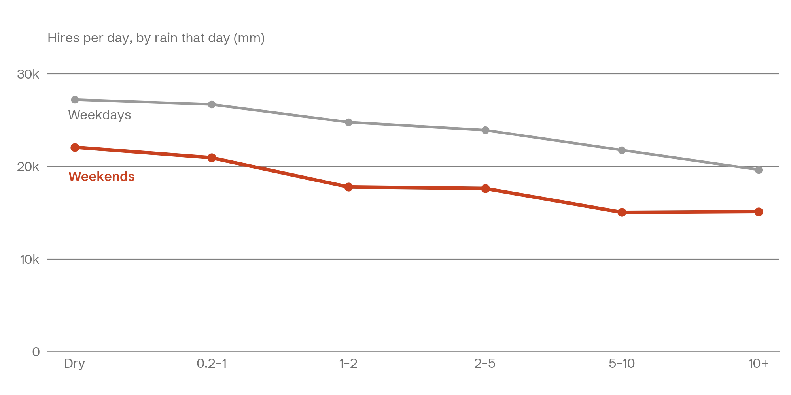

A wet weekend costs London a third of its bike hires
I matched three years of daily Santander Cycles hires to London's rainfall to see who stops riding when it rains. Commuters mostly don't. Weekend riders do.
Data
TfL cycle hire, Open-Meteo, 2023–25
Tools
Python, pandas, matplotlib

The question
Does bad weather stop people cycling, or only some people? If commuters ride whatever the weather, the network needs bikes in the same places every weekday. If leisure riders stay home, weekend planning should follow the forecast.
The data
TfL publishes the number of Santander Cycles hires for every day. I took 1 January 2023 to 31 December 2025, 1,096 days, and joined each day to its total rainfall in central London from Open-Meteo's historical weather API.
Then I grouped the days by rain, from dry (0.2 mm or less) to 10 mm and over, and split weekdays from weekends.
What I found
On a dry weekday, Londoners hire about 27,200 bikes. On a weekday with 5 mm of rain or more, 20,900: a drop of 23%. Weekends start lower, at 22,100, and fall to 15,000 on wet days: a drop of 32%.
| Rain that day | Weekday | Weekend | Days |
|---|---|---|---|
| Dry | 27,217 | 22,071 | 556 |
| 0.2–1 mm | 26,694 | 20,937 | 163 |
| 1–2 mm | 24,777 | 17,778 | 86 |
| 2–5 mm | 23,916 | 17,619 | 139 |
| 5–10 mm | 21,762 | 15,040 | 95 |
| 10 mm and over | 19,638 | 15,125 | 57 |
Limits
Rain isn't the only thing that changes. Wet days cluster in winter, when fewer people ride anyway, so part of the gap is the season, not the rain. Next I'd compare wet and dry days within the same month, and add temperature and daylight.
Back to all work